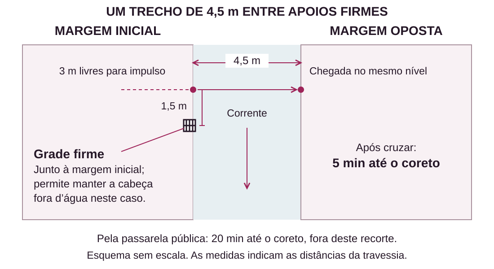

Preparar aventuras
Preparar uma aventura é reunir o que ajuda a apresentar uma situação, ouvir as escolhas do grupo e acompanhar o que acontece.
Comece pelo interesse da mesa: uma missão encaminhada pela escola, o pedido de um amigo ou uma iniciativa do grupo. Uma sessão pode reunir uma ocorrência e o encontro que vem depois dela.
Este capítulo ensina um preparo que você pode ampliar conforme precisar. O exemplo Antes que o trem parta é uma criação original para o Guia: uma despedida que pode terminar sem combate. Para acompanhar a preparação de uma ameaça já pronta, volte a Sua primeira missão. Se já conhece o método e quer preparar a próxima sessão, vá a Quando há pouco tempo e use a folha curta de preparo.
3.1 O que preparar
Leia as fichas e relembre a sessão anterior. Quem o grupo quer procurar? Que capacidade pode mudar o caminho? Há alguém ferido, com um recurso gasto ou com um compromisso em aberto?
Em seguida, responda a cinco perguntas. Frases curtas bastam; acrescente detalhes quando eles ajudarem a conduzir uma escolha.
- O que está acontecendo? Defina a situação e o motivo pelo qual alguém se importa com ela.
- Quem está envolvido? Escolha as pessoas principais e o que querem agora.
- Onde é possível agir? Descreva os lugares, os acessos e aquilo que se percebe ao chegar.
- O que pode ser descoberto ou mudar? Anote informações, acontecimentos e consequências que importam para as decisões.
- Como começar? Prepare a primeira descrição e uma oportunidade de agir.
Se houver perigo, prepare como ele funciona: ficha, efeitos, sinais de risco e meios de agir. Um nome e uma ideia de ataque ainda precisam das regras para se tornarem uma ameaça pronta.
Uma despedida
Helena ajudou os personagens e vai se mudar hoje. Convidou-os para um café perto da estação. Nina também irá: quer continuar recebendo sua orientação. O tempo para conversar é curto, e as pessoas podem querer coisas diferentes do encontro.
Antes da sessão, pergunte a cada jogador interessado o que liga sua personagem a Helena. Pode ser uma aula, uma ajuda recebida ou uma amizade. Use um contato já conhecido se isso fizer mais sentido. Se o grupo preferir apenas se despedir brevemente, a cena pode durar poucos minutos; a duração acompanha o interesse da mesa.
O preparo ajuda a responder ao grupo; os jogadores decidem o que dizer e fazer na despedida. O preparo reunido de Antes que o trem parta mostra essas notas prontas para usar.
Escolhas do grupo
No anexo, a criatura ocupa o depósito e tem um comportamento definido. O preparo permite responder ao grupo quando procura testemunhas, investiga, enfrenta a maldição ou recua.
Na despedida, Helena aceita conversar e tem um horário para sair. Nina quer falar com ela, mas teme fazer um pedido grande demais. O grupo pode aproximá-las, conversar separadamente, oferecer outra ajuda ou apenas ouvir. Você conhece os desejos das pessoas; as decisões surgem durante o jogo.
3.2 Pessoas que dão vida à aventura
Uma pessoa preparada para uma conversa pode caber em três notas: o que quer, como se apresenta e como pode reagir. Acrescente a relação com os personagens quando ela já existir.
Helena quer se despedir e partir com os compromissos em ordem. Pergunta por um detalhe da vida de cada personagem e ouve a resposta. Pode combinar um contato futuro, mas explica o tempo de que dispõe. A mudança é uma decisão dela, ligada à sua própria vida.
Nina quer continuar recebendo orientação. Chega cedo e ensaia uma pergunta, mas a interrompe quando outros se aproximam. Se alguém lhe der espaço, explica sua preocupação. Pode aceitar uma conversa marcada para outro dia ou pedir ajuda para encontrar outra pessoa de confiança.
Raul quer acolher a despedida no café que mantém. Conhece Helena como cliente e lembra do pedido habitual dela. Oferece uma mesa mais tranquila se perceber que o grupo precisa conversar. Pode contar uma lembrança comum e depois voltar ao trabalho.
Use essas notas para decidir o que cada pessoa faz e dê tempo para o jogador responder. Você pode narrar um pedido e conversar com palavras próprias; interpretar não exige outra voz ou discurso ensaiado.
Pedidos e acordos
Ouça o que a personagem oferece e o que deseja obter. Depois, responda a partir da vontade e das possibilidades de quem a escuta. Um teste entra quando a regra pedir e houver uma incerteza que ele possa resolver.
Se pedirem a Helena uma conversa por chamada na semana seguinte, ela pode abrir a agenda e combinar. Se pedirem disponibilidade a qualquer hora, ela explica que isso não consegue oferecer. A partir daí, o grupo pode propor um horário, dividir o apoio com outra pessoa ou aceitar o limite. Um pedido diferente pode mudar a resposta.
Se essa pessoa puder participar de um confronto, prepare também sua ficha. Para uma conversa, as notas de interpretação podem bastar.
3.3 Lugares e caminhos
Descreva primeiro aquilo que ajuda alguém a agir: o que se vê, onde estão as pessoas e quais caminhos estão disponíveis. Acrescente sons, cheiros e pequenos costumes para tornar o lugar reconhecível.
O café tem entrada pela rua, saída para o caminho da estação, mesas junto à janela e outra ao fundo. Raul serve bebidas; viajantes entram com malas. O grupo pode escolher onde sentar, conversar em particular ou acompanhar Helena.
Para essa conversa, uma descrição curta do espaço basta. Se a posição e a distância passarem a decidir ações, esclareça-as antes da escolha e use um desenho quando ajudar. Na missão do anexo, as medidas das salas, das portas e das posições importam para movimento e alcance; por isso o preparo inclui uma planta.
Caminhos alternativos
No anexo, a entrada de serviço oferece outro acesso ao corredor. Quem a usa chega a uma posição diferente e ainda precisa lidar com aquilo que encontrar. Na despedida, acompanhar Helena até a estação pode permitir uma última conversa depois de sair do café.
Ao preparar uma alternativa, diga o que ela permite e o que exige. Uma passagem pode estar aberta; outra pede ajuda de alguém que conhece o lugar. O grupo consegue escolher melhor quando percebe essas diferenças antes de se comprometer.
Uma capacidade pode facilitar um acesso ou permitir outro caminho. Resolva seu uso e atualize a situação: quem está lá, o que acontece e como as pessoas reagem.
3.4 Pistas e investigações
Para preparar uma investigação, comece pelo que realmente aconteceu. Anote a sequência dos fatos, as marcas que deixaram e quem conhece cada parte. Separe o fato da interpretação de uma testemunha.
No anexo, caixas foram movidas e há uma criatura no depósito. Davi relata o movimento que presenciou; o relato ajuda a investigar mesmo que ele não conheça a causa. Sua incerteza sobre a explicação não apaga o que viu.
Escolha as perguntas necessárias para agir, como “Onde aconteceu?” e “Há alguém em risco?”. A história do lugar pode oferecer contexto sem ser indispensável para seguir.
Encontrar as pistas
Prepare mais de um caminho plausível para uma descoberta indispensável. O grupo pode ouvir uma testemunha, examinar um vestígio ou consultar um registro que realmente exista. Distribua as informações conforme a relação de cada fonte com os fatos.
Esses caminhos precisam ser acessíveis de formas diferentes. Três documentos guardados na mesma sala trancada continuam dependendo de um único acesso. Uma testemunha fora da sala e uma marca visível no corredor oferecem outras possibilidades.
Ao conduzir, explique o que a personagem percebe na situação. Quando houver um teste, escolha-o pela ação realizada e resolva suas consequências conforme o Livro de Regras. A investigação pode continuar por outra fonte disponível depois de uma falha; isso não exige transformar a falha em sucesso nem repetir a mesma tentativa sem mudança.
Depois da descoberta
Se os personagens entenderem cedo o que aconteceu, deixe que usem esse conhecimento. Talvez possam procurar a pessoa certa, evitar um risco ou escolher como apresentar uma descoberta. A aventura passa à próxima decisão.
Alguém que esconde informação também age pelo que sabe. Anote o que deseja proteger, como percebe a investigação e o que poderia fazê-lo conversar. Se houver risco de confronto, prepare-o. Assim você consegue responder a perguntas imprevistas sem precisar mudar o culpado ou inventar outro segredo para prolongar a sessão.
Para estudar uma investigação mais detalhada, consulte O aviso de reabertura. Use esse caso quando quiser acompanhar fatos, testemunhas e acesso a informações com mais profundidade.
3.5 Perigos e consequências
Um perigo preparado precisa permitir uma escolha informada. Descreva os sinais que os personagens conseguem perceber: um piso cedendo, uma pessoa ameaçada, o efeito de uma técnica ou a distância até uma saída. A revelação de um risco oculto também precisa decorrer de algo estabelecido na situação.
Ao escolher uma ameaça pronta, confira ataque, efeito, custo e demais regras. Para maldições que possam ser domadas, tenha a conversão pertinente. Inimigos e perigos ensina essa preparação; os inimigos do Guia continuam experimentais.
Os objetivos da missão
Os personagens podem estar tentando retirar alguém, descobrir a origem de um problema, conseguir passagem ou proteger um objeto. O combate pode fazer parte disso. Pergunte o que cada ameaça tenta fazer e o que aconteceria se o grupo não a enfrentasse naquele momento.
No anexo, ouvir as testemunhas e conhecer os acessos ajuda a decidir como lidar com a criatura. A retirada continua sendo uma ação possível. Ao preparar sua própria missão, saiba para onde os personagens podem recuar e a quem conseguem pedir ajuda. Essa possibilidade deve existir na situação para poder ser escolhida.
As consequências
Na despedida, combinar um contato pode levar a outro encontro. Se ninguém combinar nada, Helena ainda poderá receber uma mensagem depois. Se Nina decidir procurar outra pessoa, esse caminho pode entrar na campanha. A consequência nasce da decisão e das possibilidades de cada participante.
Acompanhe recursos gastos, danos e pessoas afetadas. Consulte socorro, derrota e recuperação quando necessário: o fim da sessão não recupera automaticamente os recursos da ficha.
Antes que o trem parta
Preparo preenchido · encontro de cotidiano · criação original do Guia
O começo
Helena vai se mudar e convida o grupo para um café antes da viagem. Combine com os jogadores uma relação anterior com ela; um contato da campanha pode assumir seu lugar. O encontro começa às 18h. Ela pretende sair do café às 18h40 para pegar o trem das 19h. São horários desta situação fictícia.
Para apresentar: “Helena escolheu uma mesa perto da janela. Uma mala está ao lado da cadeira. Ela acena quando vocês entram: ‘Queria ver vocês antes de ir. Como foi a semana?’”
As pessoas
Helena: quer se despedir e partir; pergunta por detalhes da vida dos personagens. Aceita combinar contato futuro dentro da disponibilidade que tiver. Sua mudança foi uma decisão própria.
Nina: quer continuar recebendo orientação de Helena. Ensaia uma pergunta e hesita diante de outras pessoas. Se tiver espaço, conta a preocupação; pode aceitar uma chamada marcada ou ajuda para encontrar outro contato.
Raul: mantém o café e conhece Helena como cliente. Lembra seu pedido habitual, oferece uma mesa mais tranquila e conta uma lembrança se houver oportunidade. Continua atendendo os demais clientes.
O lugar e as informações
O café tem entrada pela rua, mesas junto à janela, uma mesa tranquila ao fundo e uma saída para o caminho da estação. Raul está no balcão. Nina já chegou; o grupo pode notá-la hesitando ou convidá-la a conversar.
Helena informa seu horário quando o grupo chega. Nina explica sua vontade se puder falar à vontade; o mestre pode descrever sua hesitação para que os jogadores decidam se querem se aproximar. As conversas podem acontecer juntas, em separado ou durante a caminhada até a estação.
O que pode mudar
Às 18h40, Helena avisa que vai sair. Acompanhe a passagem do tempo conforme as ações e informe a aproximação desse horário; tempo gasto pelos jogadores conversando fora da cena não avança sozinho o relógio da história. O grupo pode acompanhá-la, despedir-se no café ou combinar outro contato.
Anote os contatos combinados; um pedido recusado pode levar a outra proposta. Se alguém perder a despedida, uma mensagem ou encontro futuro continua possível. As reações emocionais dos personagens pertencem aos jogadores.
Para encerrar
Quando as pessoas tiverem dito ou feito o que desejavam, acompanhe a partida ou resuma o fim do encontro. Registre contatos combinados e interesses que o grupo queira retomar. Não há ameaça escondida preparada para esta cena nem benefício mecânico concedido pela conversa.
3.6 Ideias para sua próxima missão
Você pode partir de três elementos: uma pessoa, algo que ela quer e uma mudança. Escolha aqueles que despertam interesse na sua mesa e desenvolva as cinco perguntas do início do capítulo.
Uma colega quer apresentar uma criação. O primeiro teste público será hoje, e ela convida o grupo. Prepare o que a criação faz, a ajuda que deseja receber e quem mais irá. A sessão pode girar em torno da apresentação, de uma discordância sobre seu uso ou de um novo projeto. Qualquer capacidade com efeito nas regras precisa estar definida antes de ser usada.
Uma pessoa quer voltar a um lugar. Depois de uma ocorrência, ela deseja retomar uma atividade importante. Prepare o estado atual do espaço, quem pode acompanhá-la e o que ela quer fazer ali. Se ainda houver uma ameaça, escolha seus sinais e sua ficha; se estiver seguro, o retorno pode sustentar uma cena de cuidado e convivência.
Um contato recebe um relato estranho. Uma passagem habitual passou a provocar medo, e alguém procura ajuda. Defina a causa, as informações acessíveis e o que as pessoas têm feito para lidar com o problema. Esse começo pode levar a uma investigação e, dependendo da causa preparada, a um confronto.
Cada começo pede um preparo: reconciliação pede pessoas e motivos; investigação, fatos e pistas; resgate, localização, perigo e meios de agir. Combine essas partes conforme precisar. As opções e os dois exemplos a seguir oferecem situações, pessoas e lugares para escolher e combinar.
As opções abaixo são originais, sem revelações da trama de Jujutsu Kaisen.
Escolha o que precisa: situações, pessoas, lugares ou complicações. Para acompanhar uma combinação pronta, siga para A assinatura no coreto ou Ensaio na outra margem.
Use os perfis para interpretar e combinar encontros. Quando uma capacidade ou ameaça entrar em jogo, tenha sua ficha com efeitos, requisitos e meios de enfrentamento definidos. A ajuda usa Ajudar quando seus requisitos forem cumpridos; corpos e capacidades seguem suas regras. Se uma criatura puder ser adquirida, prepare também a conversão.
Oito situações para começar
1. Luz na sala de projeção
Chamado institucional. Leda viu uma criatura se esconder entre as cadeiras quando acendeu a luz do cinema fechado. Quer buscar objetos pessoais, mas espera do lado de fora. Uma escola ou rede local pede ao grupo que investigue. Prepare a maldição e seus sinais. O grupo pode buscar informações, procurar outro acesso, proteger o lugar ou enfrentar a ameaça. A luz orienta o comportamento definido na ficha.
2. Depois do primeiro chamado
Apoio a um aprendiz. Caio voltou de uma ocorrência e quer entender uma decisão que tomou. Um contato pede ao grupo que o ouça. Ele mistura o que viu com suas conclusões sobre a maldição. Prepare os fatos e quem mais os conhece. O grupo pode rever o acontecimento, procurar outra fonte ou compartilhar uma experiência. A conversa pode terminar com uma pergunta melhor para a próxima missão.
3. A assinatura no coreto
Iniciativa dos personagens. Nori encontrou um banco rachado perto de uma fita usada por Rei e suspeita de relação entre os dois. Rei quer esclarecer o ocorrido. O grupo pode ajudar, ouvir testemunhas e examinar o lugar. Separe a história do vestígio da causa do dano. O primeiro exemplo ao final desenvolve essa investigação, com observação, conversas e leitura de energia opcional.
4. O que ficou no cinema
Interesse pessoal. Leda encontra fotografias de uma antiga apresentação e quer rever quem participou. Pergunte quem tem ligação com o lugar ou deseja acompanhá-la. Prepare as pessoas acessíveis e suas lembranças. O grupo pode reunir versões, procurar uma gravação ou organizar um reencontro. Uma lembrança pode ter significados diferentes para os participantes. Escolher o que guardar pode encerrar o encontro.
5. Uma canção para cada um
Convivência. Dara convida o grupo para um ensaio no coreto. Quer conhecer as músicas de que as personagens gostam. Nori oferece espaço e os participantes sugerem como tocar juntos. Cada jogador escolhe o que compartilhar: uma lembrança, um ritmo ou apenas sua companhia. O encontro pode terminar numa apresentação imperfeita e prazerosa. A cena Um ensaio entre amigos mostra esse fechamento.
6. Ensaio na outra margem
Apoio cotidiano. Dara quer chegar ao coreto com suas partituras secas. O caminho cruza um canal; a passarela pública fica num contorno mais demorado. Joana conhece os percursos. O grupo pode buscar uma travessia seca, cruzar separadamente ou avisar do atraso. Prepare margens, distância e consequência da falha. O segundo exemplo desenvolve o obstáculo, com alternativa por terra.
7. O último ônibus
Proteção de pessoas. Uma maldição ronda o terminal quando os últimos passageiros chegam. Prepare quem a viu, onde pode ser percebida e o que desencadeia sua ação. Mostre caminhos para as pessoas saírem da área. O objetivo pode ser conduzi-las a outro embarque, localizar a ameaça ou exorcizá-la. O horário dos ônibus oferece contexto; ataques e dano dependem das ações e regras da criatura.
8. Um pedido vindo da água
Contato sobrenatural. Uma maldição pede que retirem um objeto comum da margem do canal. Ela o reconhece e quer conservá-lo, mas outras pessoas a temem. Prepare o motivo, o perigo real e como se comunica. O grupo pode verificar a história, negociar ou recusar. Conversar revela interesses, sem garantir confiança, acordo ou aquisição da criatura. Sua reação depende de seus meios e das escolhas em jogo.
Seis pessoas para encontrar
Rei, feiticeira independente
Rei quer trabalhar sem ser responsabilizada por toda manifestação próxima. Repete o que observou antes de dizer o que concluiu. Ajuda quem pergunta por fatos; reage mal a acusações feitas sem ouvi-la. Pode explicar sua passagem pelo coreto e procurar quem presenciou o treino. Aceita corrigir um erro demonstrado, mas conhece apenas parte do que acontece na região.
Nori, cuidador do coreto
Nori quer manter o coreto disponível para encontros. Recolhe cadeiras enquanto conversa e lembra das pessoas pelas atividades de que gostam. Conta o que viu e admite quando apenas ouviu um comentário. Reconsidera decisões quando entende como a proposta cuida do espaço. Pode oferecer companhia e mostrar acessos; confira os materiais disponíveis antes de prometer ajuda.
Dara, musicista de corpo construído
Dara é um Corpo Amaldiçoado consciente. Quer compor com outras pessoas e leva um caderno cheio de anotações. Experimenta um ritmo na mesa antes de explicar uma ideia. Aceita ajuda e diz quando prefere outro caminho. Pode compartilhar uma refeição pela companhia, mesmo sem precisar comer.
Joana, conhecedora das hortas
Joana cuida de uma horta junto ao canal e quer que os caminhos sejam usados com segurança. Mostra o destino e pergunta o que as pessoas levam antes de apontar um atalho. Conhece a passarela e os apoios locais. Pode descrever a travessia ou oferecer um meio que possua.
Caio, aprendiz fora de um clã
Caio descobriu o jujutsu recentemente e quer ser levado a sério sem fingir que sabe tudo. Faz perguntas rápidas e depois reformula uma com cuidado. Fala melhor quando pode expressar dúvidas sem ser diminuído. Pode pedir companhia para conhecer um contato ou contar algo que não compreendeu.
Leda, antiga projecionista
Leda quer decidir o futuro dos objetos e lembranças do cinema onde trabalhou. Recorda detalhes de sessões antigas e aponta onde cada pessoa costumava sentar. Responde a perguntas sobre o prédio, mas precisa de tempo para decidir sobre algo pessoal. Pode se interessar por uma proposta de preservação. Seu conhecimento do cinema não inclui entender fenômenos jujutsu.
Quatro lugares para usar
O coreto da praça
Um espaço circular de 6 m de diâmetro, com colunas e piso firme, recebe ensaios e conversas. Um banco fica na área externa; um caminho livre liga o lugar às ruas da praça. Descreva o que há à vista e onde as pessoas estão. Nori conhece o uso cotidiano. O lugar pode sustentar uma celebração, um encontro reservado ou a investigação de um vestígio, conforme o que foi preparado.
O canal das hortas
Água separa dois acessos firmes usados por quem cuida das hortas. Joana conhece a correnteza e o contorno até uma passarela pública. Para uma travessia, defina largura, apoios, percurso e consequência da falha. O exemplo Ensaio na outra margem fornece esses dados. Em outras situações, o canal pode oferecer uma conversa, uma busca pela margem ou uma alternativa de caminho, sem repetir o mesmo obstáculo.
O cinema fechado
A entrada principal dá acesso ao saguão; uma porta lateral de serviço leva ao corredor junto à sala de projeção. Leda conhece essas ligações e o que ainda pode ser aberto. Fotografias, cadeiras e equipamentos mostram usos anteriores. Escolha iluminação, estado das estruturas e áreas acessíveis antes de usar um risco. Para combate ou movimento preciso, complete a planta e as distâncias; a descrição não estabelece medidas táticas.
O pequeno terminal
Um abrigo aberto e bancos ficam diante das plataformas. Há acesso pela rua e uma passagem de pedestres até o bairro. Passageiros, trabalhadores e vendedores conhecem partes diferentes da rotina. A multidão pode oferecer testemunhas e assuntos de conversa. Se a multidão interferir numa ação, descreva o obstáculo e use a regra pertinente à tentativa.
Seis complicações possíveis
Um acesso ficou indisponível
Uma obra, mudança no lugar ou acontecimento anterior impede o percurso que o grupo conhecia. Mostre o impedimento e as alternativas acessíveis antes da escolha. Use essa complicação quando houver uma causa preparada; uma passagem recém-descoberta não precisa ser fechada para preservar o caminho que você imaginou.
A pessoa precisa sair
Uma testemunha tem um compromisso e informa até quando consegue conversar. O grupo pode priorizar perguntas, acompanhá-la ou combinar contato. O prazo pode gerar uma escolha sem apagar o que ela sabe. A demora para esclarecer uma descrição do mestre não vira, por si só, tempo perdido na história.
Duas vontades pedem espaço
Uma pessoa quer conversar em particular; outra quer incluir o grupo. Descubra o motivo de cada pedido e ofereça a decisão. Alternar conversas ou combinar outro momento pode atender às duas. O conflito precisa existir entre aquelas pessoas, em vez de surgir como penalidade automática por ajudar alguém.
Outra equipe já esteve aqui
Há uma mudança confirmada por outra mesa. Confira o registro, quem conhece o resultado e quais perguntas permanecem. Use essa informação para continuar do estado atual. Uma ameaça resolvida continua resolvida; um encaminhamento aceito pode ainda depender de intervenção.
O horário mudou
Um encontro, transporte ou apresentação teve seu horário alterado. Defina quem soube e por qual meio o grupo pode descobrir. A notícia oferece a possibilidade de reorganizar planos. Preserve o tempo já passado e dê efeito aos avisos que os personagens conseguirem transmitir.
O relato mistura fato e conclusão
Alguém viu um efeito e atribuiu uma causa sem confirmá-la. Prepare o que realmente percebeu e os meios de examinar a hipótese. Ao conversar, essa pessoa pode reconhecer a diferença. Se a confusão veio da sua descrição, esclareça-a diretamente, sem cobrar outro teste para entender a frase.
Combinação 1: A assinatura no coreto
Use: situação 3, Rei e Nori, coreto e relato que mistura fato e conclusão. O objetivo é esclarecer o dano a um banco e o que o vestígio energético significa. Este preparo não inclui uma ameaça de combate.
O que aconteceu
Rei treinou no coreto entre 17h e 17h10 e deixou uma fita presa a uma coluna para marcar sua posição. O preparo estabelece que a fita ainda conserva resíduos de energia durante esta investigação. Às 17h20, um galho caiu sobre o banco externo e rachou sua madeira. Nori ouviu o estalo, encontrou o dano e associou a fita ao acontecimento. Rei quer que examinem os fatos.
O galho já caiu e não há outra queda iminente. O banco está sem uso até ser cuidado. A fita é um objeto comum com vestígios; não tem poderes.
Para começar
“Nori mostra o banco rachado e aponta a fita na coluna: ‘Isso estava aqui quando ouvi o estalo’. Rei responde: ‘Usei a fita no treino. Quero entender o que aconteceu depois’. O galho está no chão, ao lado do banco.”
Caminhos até os fatos
O banco, o galho e a fita estão à vista. Nori conta quando ouviu o estalo; uma fotografia feita por ele às 17h05 mostra a fita e o banco ainda inteiro. Rei descreve seu treino e o horário em que saiu. O encaixe do impacto e os fragmentos de madeira junto ao galho permitem examinar a causa física do dano.
Conversa e observação permitem investigar sem Sentir Energia. Informe os detalhes evidentes. Perguntas incertas seguem as ações e dificuldades do Livro de Regras. Uma tentativa falha não apaga informações obtidas por outros meios.
Quem puder usar Vasculhar com Sentir Energia pode examinar a fita dentro do alcance, sem obstáculo que a esconda. Neste preparo, não há ocultação nem interferência: a fonte é localizada sem rolagem depois de gastar a Ação Padrão. Localizar o vestígio não identifica seu antigo portador nem prova a causa do dano. Comparações e outros exames seguem suas regras próprias.
A próxima decisão
Nori está disposto a ouvir o que distingue o treino da queda do galho. Rei confirma o uso da fita. Os personagens escolhem o que explicar, o que ainda perguntar e se querem cuidar do lugar.
Encerre quando o grupo tiver uma resposta suficiente. Registre o banco sem uso e os cuidados combinados. Reparos e custos seguem suas regras; a investigação não exige iniciar um projeto.
Combinação 2: Ensaio na outra margem
Use: situação 6, Dara e Joana, canal e diferença entre o horário do ensaio e o caminho disponível. Os dois exemplos são independentes; cada um tem seu estado inicial.
O começo e os caminhos
São 17h45. O ensaio no coreto começa às 18h. Dara está com o grupo na margem inicial e quer chegar com suas partituras secas. Prefere o contorno a entrar na água, mas ouve propostas de travessia seca. Seu corpo pesa 60 kg e seu equipamento ocupa 1 de Volume. Transportá-la conta como 6 de Volume: 60 ÷ 12, mais 1 de equipamento. Confira a Carga de quem a carregar.
Joana mostra duas opções: o caminho firme pela passarela pública leva 20 minutos até o coreto; cruzar o canal deixa mais 5 minutos de caminhada. Quem usar o contorno chega às 18h05, se partir agora. Dara pode ir por ele e encontrar o grupo depois. Avisar Nori permite que ele considere mudar a ordem das músicas; a resposta depende da conversa.
O trecho de água
As margens estão no mesmo nível e têm apoios firmes. Há pelo menos 3 m livres para impulso em cada lado. O canal mede 4,5 m naquele ponto. A água está livre de detritos e não é terreno difícil neste exemplo. A correnteza pede controle. Uma grade firme fica junto à margem inicial, 1,5 m adiante no sentido da água, com apoio que permite segurá-la e manter a cabeça fora d'água.

O desenho mostra o trecho da travessia. A passarela pública está fora do recorte; o tempo do contorno já inclui o percurso até o coreto.
Resolver a travessia
O obstáculo reaproveita o caso de correnteza do Guia. Nesta versão, cada pessoa que optar por nadar faz uma travessia individual, anunciada assim:
“Cruzar os 4,5 m pede Atletismo CD 14. Uma rolagem resolve o trecho. Se falhar, gasta o movimento reservado à tentativa e é levado até a grade na margem inicial. Fica segurando o apoio, sem concluir a travessia. Esse desfecho não causa dano adicional.”
Sem deslocamento de natação, cada 1,5 m nadado custa 3 m: são 9 m de movimento. Com deslocamento próprio de natação, são 4,5 m; a correnteza ainda pede o teste. Um resultado que iguale a CD basta. Na falha, apresente a nova posição e ouça como o grupo pretende continuar, usando os meios e movimentos disponíveis.
Outra personagem, com Força 1 e deslocamento 9 m, pode usar 3 m de impulso e saltar normalmente os 4,5 m entre apoios firmes: 7,5 m de movimento, sem teste nessas condições. As demais fichas usam suas distâncias e capacidades reais. Uma solução por feitiço, corda ou obra precisa cumprir alcance, carga, apoio, execução e demais requisitos; a largura do canal continua sendo 4,5 m.
Chegada e fechamento
Acompanhe o tempo das ações na história e informe o horário quando ele importar. O tempo de conversa dos jogadores não avança sozinho o relógio. Chegar depois do início pode significar perder a primeira música e entrar na seguinte, sem criar uma punição de ficha.
O grupo pode chegar junto, encontrar-se depois ou mudar o plano. Dara escolhe como participar. Registre compromissos ou mudanças que continuem relevantes. Não há uma maldição preparada para atacar quem escolheu o caminho tranquilo.
Um ensaio entre amigos
Dara coloca o caderno no coreto e pergunta: “Tem algum som que vocês queiram trazer para a música?”. Uma jogadora descreve o ritmo que sua personagem faz com os dedos. Outra prefere ouvir. Nori se acomoda numa cadeira e pede para repetirem um trecho de que gostou.
Ouça quem deseja tocar, contar uma lembrança ou responder ao convite. Podem trocar ideias, errar uma entrada e começar de novo. Só peça teste se houver algo relevante a resolver pelas regras; o encontro não exige uma disputa de desempenho.
Quando o grupo estiver satisfeito, encerre o ensaio e ouça o que cada personagem faz depois. Guardar a música para outro dia pode bastar.
3.7 Quando há pouco tempo
Reduza o alcance: uma situação, poucas pessoas e um lugar. Aproveite uma ficha pronta para a ameaça. Releia as capacidades dos personagens que mais podem afetar a situação.
Use a folha curta de preparo para anotar a abertura, o que está acontecendo, quem quer o quê, o lugar e o que pode mudar. Acrescente as referências das regras e fichas de que realmente precisará. Você pode aprofundar um assunto entre sessões quando ele passar a importar.
Para conferir um exemplo pronto, consulte Antes que o trem parta.
Se faltar uma informação, peça uma pausa curta. Para uma dúvida de regra, consulte o Livro de Regras. Para um detalhe da situação, escolha uma resposta coerente com o que já foi estabelecido. Se surgir um confronto sem ficha preparada, resolva esse preparo antes de iniciá-lo.
Ao terminar, registre o que mudou e o que os jogadores querem fazer depois. Essas notas serão o começo do próximo preparo. Em Na mesa de jogo, veremos como conduzir a conversa, lidar com uma mudança de rumo e encerrar uma sessão no tempo disponível.